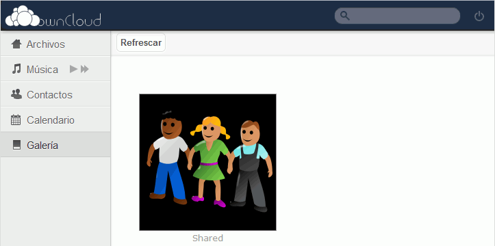

Estos ejercicios corresponden a una versión antigua de ownCloud. No están actualizados a versiones más actuales porque desde el curso 2016/17 no estoy trabajando en clase ownCloud, sino Nextcloud. He mantenido estos ejercicios en los apuntes por si le pueden servir a alguien.
Empecé a actualizar esta lección para ownCloud 8, pero no terminé de hacerlo.
En esta lección se proponen ejercicios para conocer y utilizar ownCloud. Se pueden consultar las soluciones de estos ejercicios de ownCloud, aunque se recomienda intentar realizarlos primero sin recurrir a estas soluciones.
Se recomienda haber realizado antes los ejercicios (1) de ownCloud en los que se pone en marcha ownCloud.
ownCloud (2) 1 - Perfil del administrador
Configure la cuenta del administrador estableciendo su Nombre completo, Dirección de correo y Foto de perfil.
Compruebe en Galería que las imágenes se ven correctamente:
Comparta las imágenes con el grupo tecnicos.
Ver imágenes compartidas
Como usuario sistemas_1:
Compruebe que puede acceder a las imágenes compartidas por los otros dos usuarios:

ownCloud (2) 4 - Calendario
En este ejercicio se trata de probar la creación de eventos en el calendario.
Por completar con capturas
ownCloud (2) 5 - Crear y compartir archivos de texto
Como usuario sistemas_1 cree en la carpeta Documents un documento de texto Cosas por hacer.txt y compártalo con el grupo Técnicos:
Compruebe que el usuario programador_1 ve y puede editar el documento compartido:
ownCloud (2) 6 - ownCloud Desktop Client
En este ejercicio se trata de probar el cliente de escritorio.
Descargue la versión ownCloud Desktop Client 2.1.0, publicada el 3 de diciembre de 2015. Se recomienda esa versión ya que estos ejercicios se han preparado para ella.
Si la versión ownCloud Desktop Client 2.1.0 ya no está disponible en la web del programa, puede descargarla desde la página de Descarga de aplicaciones.
Instale y configure el cliente de escritorio para el usuario sistemas_1 para sincronizar ownCloud con una carpeta de Mis documentos
Comprueba el funcionamiento del cliente de escritorio:
añadiendo o eliminando archivos en ownCloud y comprobando que se añaden o elimina en la carpeta local.
añadiendo o eliminando archivos en la carpeta y comprobando que se añaden o elimina en ownCloud.
ownCloud (2) 7 - Conexión inalámbrica
En este ejercicio se trata de probar la conexión a ownCloud desde un teléfono móvil (por ejemplo, mediante wifi).
Conexión mediante el navegador del móvil
Acceda con el móvil a la red wifi en la que se encuentra el ordenador en el que ha instalado ownCloud
Compruebe que puede entrar en ownCloud con el móvil como usuario sistemas_1 mediante la dirección https://AAA.BBB.CCC.DDD/.
Conexión mediante aplicación específica
Instale en el móvil alguna aplicación para conectar con ownCloud:
Aplicación oficial ownCloud (de pago): disponible en Google Play (para Android) o en la AppStore (para Apple).
Aplicación ownCloud.de (gratuita): disponible en Google Play (para Android) o en la AppStore (para Apple) se puede encontrar la aplicación oficial ownCloud (de pago
He elegido esta aplicación porque era la más valorada actualmente (enero de 2016) en Google Play , pero realmente no la conozco lo suficiente como para recomendarla.
Compruebe el funcionamiento de la aplicación
Otras aplicaciones
Probar la aplicación (de Android) ownCloud Bookmarks (gratuita).
Suba a ownCloud la canción y compartala con el usuario programador_1.
Como usuario programador_1:
Compruebe que puede acceder a la canción para descargarla, pero no para reproducirla.
Nota: ownCloud 7 no permite reproducir archivos de música sin instalar aplicaciones adicionales
Instalar aplicación Music
Como usuario administrador:
En el menú de selección de aplicaciones, abra la página de Aplicaciones
En la lista de aplicaciones, elija la opción que abre la página web del repositorio de aplicaciones para ownCloud.
Active la aplicación Music 0.3.8, publicada el 27 de octubre de 2015. Se recomienda esa versión ya que estos ejercicios se han preparado para ella.
Reproducir canciones
Como usuario sistemas_1 o programador_1:
Compruebe que puede reproducir la canción subida:
ownCloud (2) 9 - Otras aplicaciones
Pruebe alguna de las aplicaciones disponibles para ownCloud 8.2.
El repositiorio https://apps.owncloud.com/ contiene un catálogo de las aplicaciones disponibles para todas las versiones de ownCloud.
ownCloud (2) 10 - Temas
Por completar
Para modificar el aspecto de ownCloud, puede crear un tema. Los temas se crean en la carpeta /themes, creando una carpeta. En esa carpeta se debe reproducir la estructura de carpetas y archivos de ownCloud. ownCloud utilizará el archivo que se guarde allí en lugar del original.
Además, en el fichero de configuración debe añadirse la referencia al nuevo tema:

 (puede usar otra de las imágenes de la página
(puede usar otra de las imágenes de la página 

 (puede usar otras de las imágenes de la página
(puede usar otras de las imágenes de la página  y
y  )
)


{kind=link}
{kind=link}